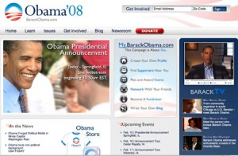
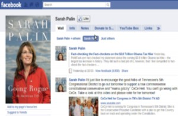

<?xml version="1.0" encoding="UTF-8"?>
<rss version="2.0"
	xmlns:content="http://purl.org/rss/1.0/modules/content/"
	xmlns:wfw="http://wellformedweb.org/CommentAPI/"
	xmlns:dc="http://purl.org/dc/elements/1.1/"
	xmlns:atom="http://www.w3.org/2005/Atom"
	xmlns:sy="http://purl.org/rss/1.0/modules/syndication/"
	xmlns:slash="http://purl.org/rss/1.0/modules/slash/"
	>

<channel>
	<title>Chronosynclastic Infundibulum &#187; censorship</title>
	<atom:link href="http://www.semanticoverload.com/tag/censorship/feed/" rel="self" type="application/rss+xml" />
	<link>http://www.semanticoverload.com</link>
	<description>The world through my prisms</description>
	<lastBuildDate>Thu, 07 Apr 2011 17:36:17 +0000</lastBuildDate>
	<language>en-US</language>
	<sy:updatePeriod>hourly</sy:updatePeriod>
	<sy:updateFrequency>1</sy:updateFrequency>
	<generator>http://wordpress.org/?v=3.5</generator>
		<item>
		<title>Social Media: on why Obama won and Palin won&#8217;t</title>
		<link>http://www.semanticoverload.com/2010/08/07/social-media-obama-vs-palin/</link>
		<comments>http://www.semanticoverload.com/2010/08/07/social-media-obama-vs-palin/#comments</comments>
		<pubDate>Sun, 08 Aug 2010 00:24:29 +0000</pubDate>
		<dc:creator>Semantic Overload</dc:creator>
				<category><![CDATA[internet]]></category>
		<category><![CDATA[networking]]></category>
		<category><![CDATA[politics]]></category>
		<category><![CDATA[censorship]]></category>
		<category><![CDATA[facebook]]></category>
		<category><![CDATA[FISA]]></category>
		<category><![CDATA[Obama]]></category>
		<category><![CDATA[Palin]]></category>
		<category><![CDATA[slate]]></category>
		<category><![CDATA[TED]]></category>

		<guid isPermaLink="false">http://www.semanticoverload.com/?p=621</guid>
		<description><![CDATA[Obama&#8217;s unprecedented use of social media as a critical marketing and canvasing tool to enable his historic victory in the 2008 presidential race has been dissected and beaten to death. I am not here to resurrect that zombie. However, I will take a singular incident of his campaign to illustrate my point (that is, why [...]]]></description>
				<content:encoded><![CDATA[<p>Obama&#8217;s unprecedented use of social media as a critical marketing and canvasing tool to enable his historic victory in the 2008 presidential race has been dissected and beaten to death. I am not here to resurrect that zombie. However, I will take a singular incident of his campaign to illustrate my point (that is, why Obama won and Palin won&#8217;t.)</p>
<div style="width: 100%; display: block;"><a href="../../../wp-content/uploads/2010/08/my.barackobama.com_.jpg"></a><a href="../../../wp-content/uploads/2010/08/sarahpalin.fb_.jpg"></a></div>
<p><span id="more-621"></span>The incident I am talking about was cited by Clay Shirky in this TED video on &#8220;<a href="http://www.ted.com/talks/clay_shirky_how_cellphones_twitter_facebook_can_make_history.html">How social media can make history</a>.&#8221; The incident is as follows: Obama&#8217;s campaign started a portal http://my.barackobama.com for all of Obama&#8217;s supports to gather and discuss issues related to the campaign, organization, marketing, and Obama&#8217;s platform itself. Now, in January 2008 Obama had announced that he was against the<a title="FISA amendments act of 2008" href="http://www.sourcewatch.org/index.php?title=FISA_Amendments_Act_of_2008"> FISA amendment </a>that allowed warrentless wiretapping, but in mid-summer 2008, he reversed his opinion and said that he would support that FISA amendment. Expectedly, there was a huge outcry against his reversal among his supporters and they thronged to the discussion forum in http://my.barackobama.com, voiced their concerns, and asked Obama to not support the FISA amendment. The outcry was so loud that Obama had to release a statement that essentially said that he has heard his supporters loud and clear; his position is based on his assessment of the amendment; the reasons for which he supports it still stands; so he will continue to support the bill and take the hit from his supporters on this one.</p>
<p>Naturally, his supporters weren&#8217;t happy. But later on, there was realization among his supporters that although Obama didn&#8217;t agree with them, he never tried to shut them up. There was no censoring of dissenting opinions. There was no banning of people who didn&#8217;t like his position or platform. This mature treatment of social media as an extension of democracy and free speech ensured that he did not lose his support base.</p>
<p>Now, fast forward to present day. No political public figure is more prolific on social media than <a href="http://www.facebook.com/sarahpalin">Sarah Palin</a>. She has over 2 million supporters on her facebook page. Strangely, the comments on her facebook page is, for the most part, lavish outpouring of admiration, encouragement, support, and agreement. There are very few dissenting opinions, if any at all. All this seemed fishy to John Dickerson from <a href="http://www.slate.com/">The Slate</a>, so he and his colleague Jeremy Singer-Vine decided to find out what was really going on. Singer-Vine wrote a <a title="How Slate tracked deletions" href="http://www.slate.com/id/2262544/sidebar/2262679/">program to track deletions</a> of comments on Sarah Palin&#8217;s facebook page and <a title="Slate article &quot;Not Sarah Palin's Friends&quot;" href="http://www.slate.com/id/2262544/pagenum/all/#p2">found that the &#8220;wall&#8221; on Sarah Palin&#8217;s page was being sanitized through heavy censorship</a> to the point of frustration among her supporters. Naturally the comments expression such frustrations were deleted as well. For example: &#8220;Why are the few comments expressing disagreement with this endorsement being deleted?&#8221; wrote one. &#8221; Just because some of us disagree with the endorsement doesn&#8217;t mean that we don&#8217;t follow Sarah Palin.&#8221; That was deleted too.</p>
<p>Such censorship is almost guaranteed to backfire on Palin. As a public figure running for office, the way one treats their supports is strongly indicative of how they will treat their constituents, and everyone, including supporters, realize this. This why is why Obama&#8217;s supporters didn&#8217;t abandon him over the FISA vote, and there is a very good chance that Palin&#8217;s supporters will desert her.</p>
]]></content:encoded>
			<wfw:commentRss>http://www.semanticoverload.com/2010/08/07/social-media-obama-vs-palin/feed/</wfw:commentRss>
		<slash:comments>2</slash:comments>
		</item>
	</channel>
</rss>
